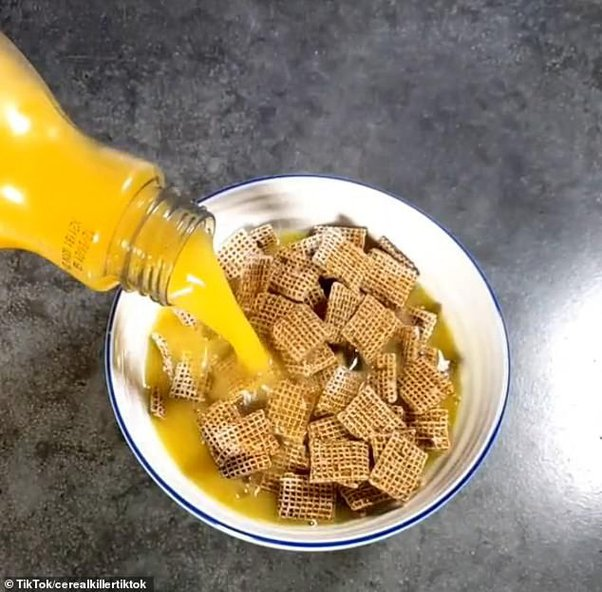
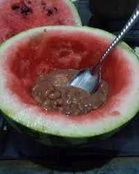
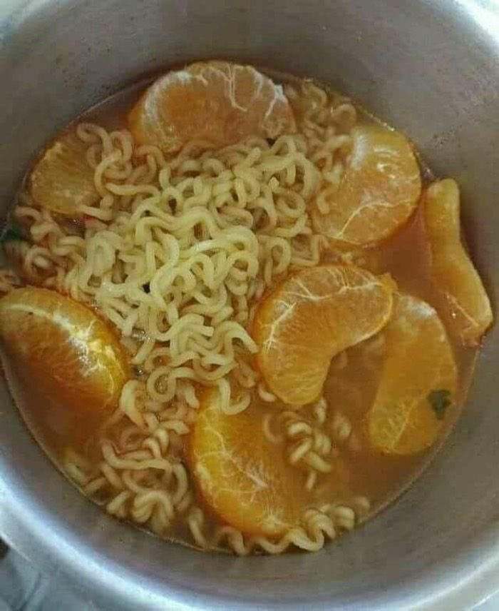

Recetario
cereal con jugo | frijoles a la sandia | maruchan a la mandarina
cereal coon jugo

ingredientes
- 1 plato profundo
- cereal del que guste
- jugo de naranja de su preferencia
Proceso
- vaciar el cereal al plato profundo
- vaciar la leche al plato y al cereal
- degustar la mosca tsé tsé
frijoles a la sandia

ingredientes
- mitad de una sandia
- frijoles cocidos
- una cuchara
Proceso
- hacer un huco en la sandia con la cuchara para poder ponerle los frijoles
- vaciar loos frijoles a la mitad de la sandia
- degustar
maruchan a la mandarina

ingredientes
- una maruchan
- una mandarina
- una c
Proceso
- vaciarle a la maruchan agua tan caliente como boris
- esperar 3 minnutos
- pelar la mandarina en gajos y los gajos se vacian a la maruchan
uchara
- degustar